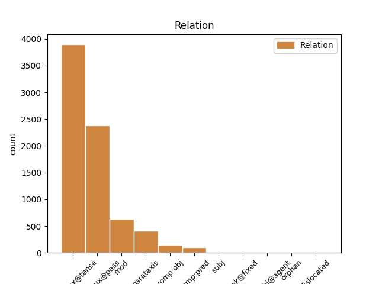
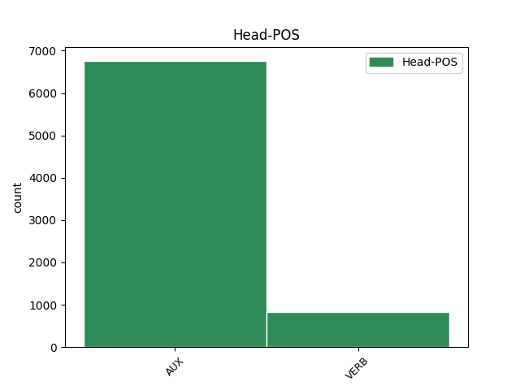
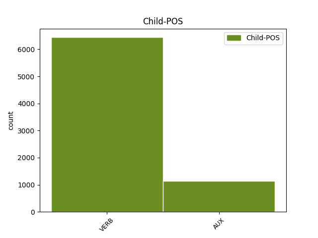

Distribution of features within this leaf



Agreement Rules sorted by frequency.
- When the dependent token is the complement for auxiliary(comp:aux@pass) of the head token,
1 La _ _ _ _ 0 _ _ _
2 plupart _ _ _ _ 0 _ _ _
3 de _ _ _ _ 0 _ _ _
4 les _ _ _ _ 0 _ _ _
5 pièces _ _ _ _ 0 _ _ _
6 de _ _ _ _ 0 _ _ _
7 Labiche _ _ _ _ 0 _ _ _
8 ont _ _ _ _ 0 _ _ _
9 été être AUX _ Gender=Masc|Number=Sing|Tense=Past|VerbForm=Part 0 _ _ _
10 publiées publier VERB _ Gender=Fem|Number=Plur|Tense=Past|VerbForm=Part 9 comp:aux@pass _ _
11 de _ _ _ _ 0 _ _ _
12 façon _ _ _ _ 0 _ _ _
13 séparée _ _ _ _ 0 _ _ _
14 et _ _ _ _ 0 _ _ _
15 en _ _ _ _ 0 _ _ _
16 recueils _ _ _ _ 0 _ _ _
17 . _ _ _ _ 0 _ _ _
1 Baptisé baptiser VERB _ Gender=Masc|Number=Sing|Tense=Past|VerbForm=Part 6 mod _ _
2 officieusement _ _ _ _ 0 _ _ _
3 Frankfurt _ _ _ _ 0 _ _ _
4 , _ _ _ _ 0 _ _ _
5 il _ _ _ _ 0 _ _ _
6 fut être AUX _ Mood=Ind|Number=Sing|Person=3|Tense=Past|VerbForm=Fin 0 _ _ _
7 ensuite _ _ _ _ 0 _ _ _
8 confié _ _ _ _ 0 _ _ _
9 pour _ _ _ _ 0 _ _ _
10 essais _ _ _ _ 0 _ _ _
11 complémentaires _ _ _ _ 0 _ _ _
12 à _ _ _ _ 0 _ _ _
13 Südwestdeutschen _ _ _ _ 0 _ _ _
14 Luftverkehrs _ _ _ _ 0 _ _ _
15 AG _ _ _ _ 0 _ _ _
16 . _ _ _ _ 0 _ _ _
1 La _ _ _ _ 0 _ _ _
2 contrepartie _ _ _ _ 0 _ _ _
3 de _ _ _ _ 0 _ _ _
4 les _ _ _ _ 0 _ _ _
5 divorces _ _ _ _ 0 _ _ _
6 unilatéraux _ _ _ _ 0 _ _ _
7 et _ _ _ _ 0 _ _ _
8 de _ _ _ _ 0 _ _ _
9 les _ _ _ _ 0 _ _ _
10 répudiations _ _ _ _ 0 _ _ _
11 infondés _ _ _ _ 0 _ _ _
12 consiste consister VERB _ Mood=Ind|Number=Sing|Person=3|Tense=Pres|VerbForm=Fin 0 _ _ _
13 dans _ _ _ _ 0 _ _ _
14 une _ _ _ _ 0 _ _ _
15 prestation _ _ _ _ 0 _ _ _
16 compensatoire _ _ _ _ 0 _ _ _
17 sans _ _ _ _ 0 _ _ _
18 remise _ _ _ _ 0 _ _ _
19 en _ _ _ _ 0 _ _ _
20 cause _ _ _ _ 0 _ _ _
21 de _ _ _ _ 0 _ _ _
22 l' _ _ _ _ 0 _ _ _
23 acte _ _ _ _ 0 _ _ _
24 de _ _ _ _ 0 _ _ _
25 volonté _ _ _ _ 0 _ _ _
26 unilatéral _ _ _ _ 0 _ _ _
27 : _ _ _ _ 0 _ _ _
28 la _ _ _ _ 0 _ _ _
29 femme _ _ _ _ 0 _ _ _
30 a avoir VERB _ Mood=Ind|Number=Sing|Person=3|Tense=Pres|VerbForm=Fin 12 parataxis _ _
31 droit _ _ _ _ 0 _ _ _
32 à _ _ _ _ 0 _ _ _
33 des _ _ _ _ 0 _ _ _
34 dommages-intérêts _ _ _ _ 0 _ _ _
35 pour _ _ _ _ 0 _ _ _
36 le _ _ _ _ 0 _ _ _
37 préjudice _ _ _ _ 0 _ _ _
38 qu' _ _ _ _ 0 _ _ _
39 elle _ _ _ _ 0 _ _ _
40 a _ _ _ _ 0 _ _ _
41 subi _ _ _ _ 0 _ _ _
42 , _ _ _ _ 0 _ _ _
43 elle _ _ _ _ 0 _ _ _
44 a _ _ _ _ 0 _ _ _
45 en _ _ _ _ 0 _ _ _
46 principe _ _ _ _ 0 _ _ _
47 la _ _ _ _ 0 _ _ _
48 garde _ _ _ _ 0 _ _ _
49 de _ _ _ _ 0 _ _ _
50 les _ _ _ _ 0 _ _ _
51 enfants _ _ _ _ 0 _ _ _
52 et _ _ _ _ 0 _ _ _
53 doit _ _ _ _ 0 _ _ _
54 retourner _ _ _ _ 0 _ _ _
55 auprès _ _ _ _ 0 _ _ _
56 de _ _ _ _ 0 _ _ _
57 son _ _ _ _ 0 _ _ _
58 tuteur _ _ _ _ 0 _ _ _
59 matrimonial _ _ _ _ 0 _ _ _
60 ; _ _ _ _ 0 _ _ _
1 La _ _ _ _ 0 _ _ _
2 Fédération _ _ _ _ 0 _ _ _
3 espagnole _ _ _ _ 0 _ _ _
4 de _ _ _ _ 0 _ _ _
5 cyclisme _ _ _ _ 0 _ _ _
6 ( _ _ _ _ 0 _ _ _
7 RFEC _ _ _ _ 0 _ _ _
8 ) _ _ _ _ 0 _ _ _
9 pourrait pouvoir VERB _ Mood=Cnd|Number=Sing|Person=3|Tense=Pres|VerbForm=Fin 29 comp:obj _ _
10 décider _ _ _ _ 0 _ _ _
11 cette _ _ _ _ 0 _ _ _
12 semaine _ _ _ _ 0 _ _ _
13 de _ _ _ _ 0 _ _ _
14 ne _ _ _ _ 0 _ _ _
15 pas _ _ _ _ 0 _ _ _
16 sanctionner _ _ _ _ 0 _ _ _
17 Alberto _ _ _ _ 0 _ _ _
18 Contador _ _ _ _ 0 _ _ _
19 , _ _ _ _ 0 _ _ _
20 contrôlé _ _ _ _ 0 _ _ _
21 positif _ _ _ _ 0 _ _ _
22 à _ _ _ _ 0 _ _ _
23 le _ _ _ _ 0 _ _ _
24 dernier _ _ _ _ 0 _ _ _
25 Tour _ _ _ _ 0 _ _ _
26 de _ _ _ _ 0 _ _ _
27 France _ _ _ _ 0 _ _ _
28 , _ _ _ _ 0 _ _ _
29 annoncent annoncer VERB _ Mood=Ind|Number=Plur|Person=3|Tense=Pres|VerbForm=Fin 0 _ _ _
30 lundi _ _ _ _ 0 _ _ _
31 14 _ _ _ _ 0 _ _ _
32 février _ _ _ _ 0 _ _ _
33 les _ _ _ _ 0 _ _ _
34 journaux _ _ _ _ 0 _ _ _
35 El _ _ _ _ 0 _ _ _
36 Mundo _ _ _ _ 0 _ _ _
37 et _ _ _ _ 0 _ _ _
38 El _ _ _ _ 0 _ _ _
39 Pais _ _ _ _ 0 _ _ _
40 sur _ _ _ _ 0 _ _ _
41 leurs _ _ _ _ 0 _ _ _
42 sites _ _ _ _ 0 _ _ _
43 internet _ _ _ _ 0 _ _ _
44 . _ _ _ _ 0 _ _ _
1 Il _ _ _ _ 0 _ _ _
2 fut être AUX _ Mood=Ind|Number=Sing|Person=3|Tense=Past|VerbForm=Fin 0 _ _ _
3 donc _ _ _ _ 0 _ _ _
4 décidé décider VERB _ Gender=Masc|Number=Sing|Tense=Past|VerbForm=Part 2 comp:aux@tense _ _
5 de _ _ _ _ 0 _ _ _
6 créer _ _ _ _ 0 _ _ _
7 deux _ _ _ _ 0 _ _ _
8 réseaux _ _ _ _ 0 _ _ _
9 électriques _ _ _ _ 0 _ _ _
10 , _ _ _ _ 0 _ _ _
11 un _ _ _ _ 0 _ _ _
12 pour _ _ _ _ 0 _ _ _
13 la _ _ _ _ 0 _ _ _
14 puissance _ _ _ _ 0 _ _ _
15 de _ _ _ _ 0 _ _ _
16 traction _ _ _ _ 0 _ _ _
17 , _ _ _ _ 0 _ _ _
18 et _ _ _ _ 0 _ _ _
19 l' _ _ _ _ 0 _ _ _
20 autre _ _ _ _ 0 _ _ _
21 pour _ _ _ _ 0 _ _ _
22 l' _ _ _ _ 0 _ _ _
23 éclairage _ _ _ _ 0 _ _ _
24 . _ _ _ _ 0 _ _ _
1 Un _ _ _ _ 0 _ _ _
2 témoin _ _ _ _ 0 _ _ _
3 , _ _ _ _ 0 _ _ _
4 le _ _ _ _ 0 _ _ _
5 docteur _ _ _ _ 0 _ _ _
6 André _ _ _ _ 0 _ _ _
7 , _ _ _ _ 0 _ _ _
8 nous _ _ _ _ 0 _ _ _
9 dit _ _ _ _ 0 _ _ _
10 dans _ _ _ _ 0 _ _ _
11 ses _ _ _ _ 0 _ _ _
12 mémoires _ _ _ _ 0 _ _ _
13 : _ _ _ _ 0 _ _ _
14 " _ _ _ _ 0 _ _ _
15 quand _ _ _ _ 0 _ _ _
16 je _ _ _ _ 0 _ _ _
17 le _ _ _ _ 0 _ _ _
18 vis voir VERB _ Mood=Ind|Number=Sing|Person=1|Tense=Past|VerbForm=Fin 0 _ _ _
19 emmené emmener VERB _ Gender=Masc|Number=Sing|Tense=Past|VerbForm=Part 18 comp:pred _ _
20 vers _ _ _ _ 0 _ _ _
21 le _ _ _ _ 0 _ _ _
22 crématoire _ _ _ _ 0 _ _ _
23 , _ _ _ _ 0 _ _ _
24 j' _ _ _ _ 0 _ _ _
25 eus _ _ _ _ 0 _ _ _
26 l' _ _ _ _ 0 _ _ _
27 impression _ _ _ _ 0 _ _ _
28 que _ _ _ _ 0 _ _ _
29 notre _ _ _ _ 0 _ _ _
30 Patrie _ _ _ _ 0 _ _ _
31 perdait _ _ _ _ 0 _ _ _
32 le _ _ _ _ 0 _ _ _
33 meilleur _ _ _ _ 0 _ _ _
34 de _ _ _ _ 0 _ _ _
35 ses _ _ _ _ 0 _ _ _
36 enfants _ _ _ _ 0 _ _ _
37 " _ _ _ _ 0 _ _ _
38 . _ _ _ _ 0 _ _ _
1 C' _ _ _ _ 0 _ _ _
2 est être AUX _ Mood=Ind|Number=Sing|Person=3|Tense=Pres|VerbForm=Fin 6 subj _ EXTPOS=PROPN|Type=Title
3 de _ _ _ _ 0 _ _ _
4 l' _ _ _ _ 0 _ _ _
5 or _ _ _ _ 0 _ _ _
6 est être AUX _ Mood=Ind|Number=Sing|Person=3|Tense=Pres|VerbForm=Fin 0 _ _ _
7 le _ _ _ _ 0 _ _ _
8 troisième _ _ _ _ 0 _ _ _
9 extrait _ _ _ _ 0 _ _ _
10 de _ _ _ _ 0 _ _ _
11 le _ _ _ _ 0 _ _ _
12 second _ _ _ _ 0 _ _ _
13 album _ _ _ _ 0 _ _ _
14 de _ _ _ _ 0 _ _ _
15 Jenifer _ _ _ _ 0 _ _ _
16 intitulé _ _ _ _ 0 _ _ _
17 Le _ _ _ _ 0 _ _ _
18 Passage _ _ _ _ 0 _ _ _
19 . _ _ _ _ 0 _ _ _
1 En _ _ _ _ 0 _ _ _
2 raison _ _ _ _ 0 _ _ _
3 de _ _ _ _ 0 _ _ _
4 l' _ _ _ _ 0 _ _ _
5 irrégularité _ _ _ _ 0 _ _ _
6 de _ _ _ _ 0 _ _ _
7 son _ _ _ _ 0 _ _ _
8 débit _ _ _ _ 0 _ _ _
9 , _ _ _ _ 0 _ _ _
10 de _ _ _ _ 0 _ _ _
11 la _ _ _ _ 0 _ _ _
12 largeur _ _ _ _ 0 _ _ _
13 de _ _ _ _ 0 _ _ _
14 son _ _ _ _ 0 _ _ _
15 lit _ _ _ _ 0 _ _ _
16 et _ _ _ _ 0 _ _ _
17 de _ _ _ _ 0 _ _ _
18 le _ _ _ _ 0 _ _ _
19 recours _ _ _ _ 0 _ _ _
20 intensif _ _ _ _ 0 _ _ _
21 à _ _ _ _ 0 _ _ _
22 l' _ _ _ _ 0 _ _ _
23 irrigation _ _ _ _ 0 _ _ _
24 pour _ _ _ _ 0 _ _ _
25 la _ _ _ _ 0 _ _ _
26 culture _ _ _ _ 0 _ _ _
27 de _ _ _ _ 0 _ _ _
28 la _ _ _ _ 0 _ _ _
29 vigne _ _ _ _ 0 _ _ _
30 , _ _ _ _ 0 _ _ _
31 de _ _ _ _ 0 _ _ _
32 le _ _ _ _ 0 _ _ _
33 coton _ _ _ _ 0 _ _ _
34 et _ _ _ _ 0 _ _ _
35 de _ _ _ _ 0 _ _ _
36 les _ _ _ _ 0 _ _ _
37 vergers _ _ _ _ 0 _ _ _
38 , _ _ _ _ 0 _ _ _
39 il _ _ _ _ 0 _ _ _
40 arrive arriver VERB _ Mood=Ind|Number=Sing|Person=3|Tense=Pres|VerbForm=Fin 0 _ _ _
41 qu' _ _ _ _ 0 _ _ _
42 en _ _ _ _ 0 _ _ _
43 hiver _ _ _ _ 0 _ _ _
44 et _ _ _ _ 0 _ _ _
45 à _ _ _ _ 0 _ _ _
46 le _ _ _ _ 0 _ _ _
47 printemps _ _ _ _ 0 _ _ _
48 ( _ _ _ _ 0 _ _ _
49 d' _ _ _ _ 0 _ _ _
50 avril _ _ _ _ 0 _ _ _
51 à _ _ _ _ 0 _ _ _
52 décembre _ _ _ _ 0 _ _ _
53 ) _ _ _ _ 0 _ _ _
54 , _ _ _ _ 0 _ _ _
55 il _ _ _ _ 0 _ _ _
56 ne _ _ _ _ 0 _ _ _
57 parvienne parvenir VERB _ Mood=Sub|Number=Sing|Person=3|Tense=Pres|VerbForm=Fin 40 comp:obj@agent _ _
58 pas _ _ _ _ 0 _ _ _
59 jusqu' _ _ _ _ 0 _ _ _
60 à _ _ _ _ 0 _ _ _
61 l' _ _ _ _ 0 _ _ _
62 Océan _ _ _ _ 0 _ _ _
63 Pacifique _ _ _ _ 0 _ _ _
64 . _ _ _ _ 0 _ _ _
Disagree Examples:
1 Les _ _ _ _ 0 _ _ _
2 commotions _ _ _ _ 0 _ _ _
3 cérébrales _ _ _ _ 0 _ _ _
4 sont être AUX _ Mood=Ind|Number=Plur|Person=3|Tense=Pres|VerbForm=Fin 0 _ _ _
5 devenu devenir VERB _ Gender=Masc|Number=Sing|Tense=Past|Typo=Yes|VerbForm=Part 4 comp:aux@tense _ CorrectForm=devenues|CorrectGender=Fem|CorrectNumber=Plur
6 si _ _ _ _ 0 _ _ _
7 courantes _ _ _ _ 0 _ _ _
8 dans _ _ _ _ 0 _ _ _
9 ce _ _ _ _ 0 _ _ _
10 sport _ _ _ _ 0 _ _ _
11 qu' _ _ _ _ 0 _ _ _
12 on _ _ _ _ 0 _ _ _
13 les _ _ _ _ 0 _ _ _
14 considére _ _ _ _ 0 _ _ _
15 presque _ _ _ _ 0 _ _ _
16 comme _ _ _ _ 0 _ _ _
17 la _ _ _ _ 0 _ _ _
18 routine _ _ _ _ 0 _ _ _
19 . _ _ _ _ 0 _ _ _
1 L' _ _ _ _ 0 _ _ _
2 œuvre _ _ _ _ 0 _ _ _
3 est être AUX _ Mood=Ind|Number=Sing|Person=3|Tense=Pres|VerbForm=Fin 0 _ _ _
4 située situer VERB _ Gender=Fem|Number=Sing|Tense=Past|VerbForm=Part 3 comp:aux@pass _ _
5 dans _ _ _ _ 0 _ _ _
6 la _ _ _ _ 0 _ _ _
7 galerie _ _ _ _ 0 _ _ _
8 de _ _ _ _ 0 _ _ _
9 les _ _ _ _ 0 _ _ _
10 batailles _ _ _ _ 0 _ _ _
11 , _ _ _ _ 0 _ _ _
12 dans _ _ _ _ 0 _ _ _
13 le _ _ _ _ 0 _ _ _
14 château _ _ _ _ 0 _ _ _
15 de _ _ _ _ 0 _ _ _
16 Versailles _ _ _ _ 0 _ _ _
17 . _ _ _ _ 0 _ _ _
1 Le _ _ _ _ 0 _ _ _
2 comportement _ _ _ _ 0 _ _ _
3 de _ _ _ _ 0 _ _ _
4 la _ _ _ _ 0 _ _ _
5 Turquie _ _ _ _ 0 _ _ _
6 vis-à-vis _ _ _ _ 0 _ _ _
7 de _ _ _ _ 0 _ _ _
8 le _ _ _ _ 0 _ _ _
9 problème _ _ _ _ 0 _ _ _
10 palestinien _ _ _ _ 0 _ _ _
11 a avoir AUX _ Mood=Ind|Number=Sing|Person=3|Tense=Pres|VerbForm=Fin 0 _ _ _
12 fait faire VERB _ Gender=Masc|Number=Sing|Tense=Past|VerbForm=Part 11 comp:aux@tense _ _
13 qu' _ _ _ _ 0 _ _ _
14 elle _ _ _ _ 0 _ _ _
15 n' _ _ _ _ 0 _ _ _
16 est _ _ _ _ 0 _ _ _
17 plus _ _ _ _ 0 _ _ _
18 en _ _ _ _ 0 _ _ _
19 odeur _ _ _ _ 0 _ _ _
20 de _ _ _ _ 0 _ _ _
21 sainteté _ _ _ _ 0 _ _ _
22 auprès _ _ _ _ 0 _ _ _
23 de _ _ _ _ 0 _ _ _
24 la _ _ _ _ 0 _ _ _
25 communauté _ _ _ _ 0 _ _ _
26 juive _ _ _ _ 0 _ _ _
27 en _ _ _ _ 0 _ _ _
28 générale _ _ _ _ 0 _ _ _
29 , _ _ _ _ 0 _ _ _
30 et _ _ _ _ 0 _ _ _
31 américaine _ _ _ _ 0 _ _ _
32 en _ _ _ _ 0 _ _ _
33 particulier _ _ _ _ 0 _ _ _
34 . _ _ _ _ 0 _ _ _
1 Ismene _ _ _ _ 0 _ _ _
2 entre _ _ _ _ 0 _ _ _
3 et _ _ _ _ 0 _ _ _
4 annonce _ _ _ _ 0 _ _ _
5 que _ _ _ _ 0 _ _ _
6 c' _ _ _ _ 0 _ _ _
7 est _ _ _ _ 0 _ _ _
8 Farnace _ _ _ _ 0 _ _ _
9 qui _ _ _ _ 0 _ _ _
10 a avoir AUX _ Mood=Ind|Number=Sing|Person=3|Tense=Pres|VerbForm=Fin 0 _ _ _
11 mis mettre VERB _ Gender=Masc|Number=Sing|Tense=Past|VerbForm=Part 10 comp:aux@tense _ _
12 le _ _ _ _ 0 _ _ _
13 feu _ _ _ _ 0 _ _ _
14 à _ _ _ _ 0 _ _ _
15 la _ _ _ _ 0 _ _ _
16 flotte _ _ _ _ 0 _ _ _
17 romaine _ _ _ _ 0 _ _ _
18 . _ _ _ _ 0 _ _ _
1 Le _ _ _ _ 0 _ _ _
2 château _ _ _ _ 0 _ _ _
3 est être AUX _ Mood=Ind|Number=Sing|Person=3|Tense=Pres|VerbForm=Fin 0 _ _ _
4 ensuite _ _ _ _ 0 _ _ _
5 vendu vendre VERB _ Gender=Masc|Number=Sing|Tense=Past|VerbForm=Part 3 comp:aux@pass _ _
6 plusieurs _ _ _ _ 0 _ _ _
7 fois _ _ _ _ 0 _ _ _
8 ; _ _ _ _ 0 _ _ _